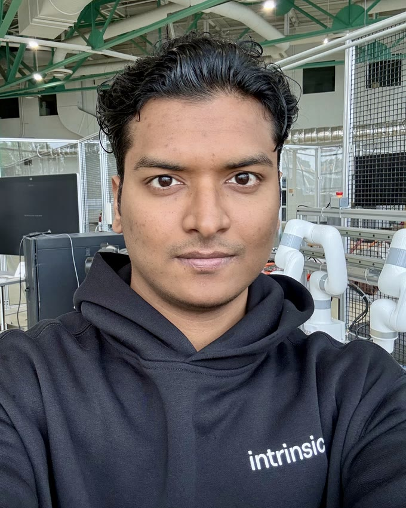

Siva Varupala
Siva Varupala is a PhD student in Industrial and Systems Engineering at Wayne State University, advised by Dr. Jeremy Rickli. His research teaches machines to understand how products come apart, turning CAD geometry into knowledge that planners and robots can use for disassembly and remanufacturing.
Before Wayne State, he received an M.Tech in Manufacturing Engineering from NIT Andhra Pradesh and a B.Tech in Mechanical Engineering from GMR Institute of Technology, and worked as a Junior Research Fellow at NIT Puducherry on automated assembly planning.
His work has appeared in Computers in Industry, Assembly Automation and ASME IDETC, and he has a patent application on automated assembly planning. His team won first place in the inaugural Intrinsic AI for Industry Challenge.

News
- Sep 2026Our team, Team FLEX, won first place in the inaugural Intrinsic AI for Industry Challenge.
- 2026Our paper on predicting disassembly interference with 3D CNNs was accepted at IWAR 2026.
- Aug 2025Presented our graph neural network paper at ASME IDETC/CIE 2025 in Anaheim.
- Jun 2025Passed the PhD preliminary examinations.
- Aug 2024Started my PhD at Wayne State University.
Research
I study disassembly planning: given a product's CAD model, which part can move, in which direction, and in what order. My earlier work developed geometric feasibility tests for assembly and disassembly, including directions beyond the six principal axes. My PhD work learns these interference relations directly from geometry with graph neural networks and 3D convolutional networks, and connects them to robots in a physical workcell.
A 16-part transmission assembly from our assembly-planning studies. It comes apart in the order of the published 7-level sequence, with each highlighted part leaving along the shaft axis in one of only two directions. In the published method (summary), this product was planned in 7 assembly levels using 2 directions, compared with 15 levels and 6 directions for earlier principal-axis methods.
Publications
Each animation is planned from the CAD geometry: interference matrices are computed for six directions and a disassembly sequence is searched on them. For the transmission and the tractor force outlet the order follows the sequences published in our 2022 paper, and the holder's last two parts leave along its published 45° oblique direction. Parts that no principal direction can free stay together. The assemblies come from my assembly-planning research and illustrate each topic; they are not results from the individual papers.
Conference papers
- Predicting disassembly interference matrices from CAD geometry using SDF volumes and CNNs IWAR 2026, Springer LNCS (accepted)
- Graph neural networks for interference matrix prediction in generative design for disassembly ASME IDETC/CIE 2025, DETC2025-168593
- A design for assembly framework based on subassembly detection method Recent Advances in Manufacturing Modelling and Optimization, Springer, 2022[DOI]
- An efficient geometrical feasibility testing method for exploded view generation to perform assembly sequence planning Current Advances in Mechanical Engineering, Springer, 2021[DOI]
Journal articles
- A novel computative strategic planning projections algorithm (CSPPA) to generate oblique directional interference matrix for different applications in computer-aided design Computers in Industry, 141, 103703, 2022[DOI]
- Disassembly sequence planning for safe disposal of end-of-life waste electric and electronic equipment National Academy Science Letters, 44(3), 243–247, 2021[DOI]
- A modified cut-set method for mechanical subassembly identification Assembly Automation, 2021[DOI]
- A multi-layered disassembly sequence planning method to support decision making in de-manufacturing Sādhanā, 46(2), 2021[DOI]
- A heuristic method with a novel stability concept to perform parallel assembly sequence planning by subassembly detection Assembly Automation, 2020[DOI]
- Optimal assembly sequence generation through computational approach Sādhanā, 44(8), 2019[DOI]
Patent
- Smart system and method for automatic exploded view generation and assembly sequence plan optimization Patent application filed, India
Teaching
- Graduate Teaching Assistant, Industrial and Systems Engineering, Wayne State University (2024–present): Industrial Engineering & Systems Thinking, Integrated Product Development, Production & Service Systems, Systems Engineering Capstone, Lean Six Sigma Capstone, Engineering Risk & Decision Analysis, Project Management
- Lab Assistant, Hydraulics and Pneumatics, NIT Andhra Pradesh (2021)
Service
- Outreach: robotics demonstrations for middle- and high-school students